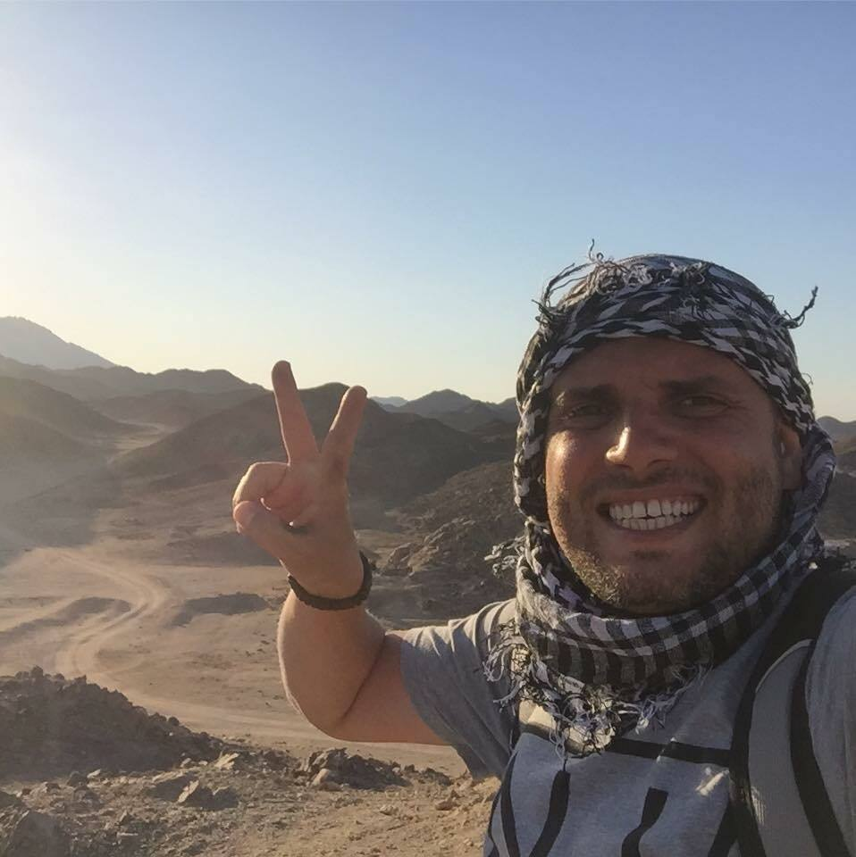

About Me
 Hi, I am Mohamed Ahmed, I was born in Egypt in a historical city called Giza. My house was about 10 miles away from the great pyramids. I graduated from Education College in 2001 and I worked as a social studies teacher in a school in Egypt for six year. My wife and I decided to immigrate to USA 9 years ago to continue our education and find job opportunities in the US, It was a great paradigm shift in my family's life.
I have two children, both of them were born in Texas. Currently I teach Arabic in the Columbus city school district, I enjoy teaching especially with middle school students. This year I decided to change my career from teaching to programming. So I attended OSU bootcamp for software engineering. I know it's a big challenge, but I believe in myself and I think I can do it through the program and I will succeed.